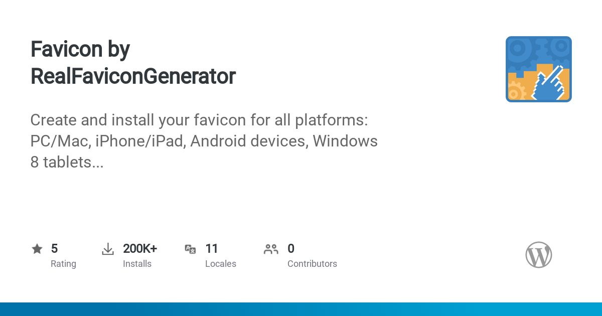

This is the WordPress Plugin Directory Social Image proof of concept.
The purpose of this project is to demonstrate rich, meaningful, plugin-specific social images, such as:

It is based on this discussion.
To try it, access https://wordpress-plugin-directory-social-image.netlify.app/plugin-social-images/[PLUGIN SLUG].
For example, https://wordpress-plugin-directory-social-image.netlify.app/plugin-social-images/favicon-by-realfavicongenerator.
In theory, it could be used as is with:
// In https://wordpress.org/plugins/favicon-by-realfavicongenerator/ ... <meta property="og:image" content="https://wordpress-plugin-directory-social-image.netlify.app/plugin-social-images/favicon-by-realfavicongenerator" /> ...
In practice, this project needs to be polished, tested... and hosted by WordPress.org itself, not me :)
This project has been implemented with:
Oh, I'm Philippe BTW